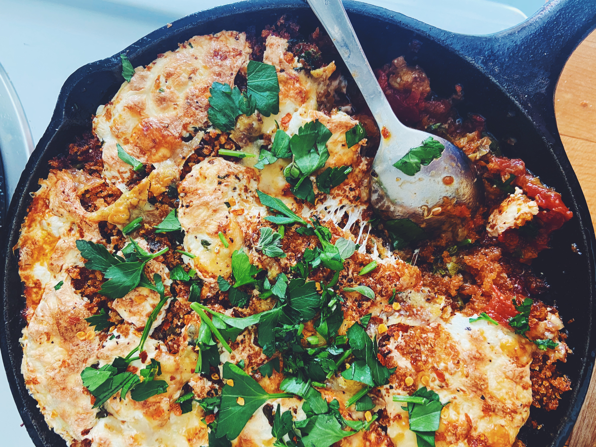

Eggplant Parm 🍆

Author
Chinese Cooking Demystified
Ingredients
- Large Eggplant (2 lbs) - sliced ½” thick
- Olive Oil (¼ cup)
- Kosher salt, freshly ground black pepper
- Onion (1, small) - thickly sliced
- Garlic (4 cloves) - thinly sliced
- Crushed red pepper flakes
- Anchovy (4 fillets)
- Whole Tomatoes (28 oz. can)
- Kosher salt, freshly ground black pepper
- Panko bread crumbs (¾ cup)
- Olive Oil (¼ cup)
- Kosher salt, freshly ground black pepper
- Grated parmesan (⅓ cup)
- Capers (2–3 tbsp) - chopped
- Fresh Oregano (2 tbsp) OR Dry (1 tbsp)
- Parsley (⅓ cup) - coarsely chopped
- Fresh Mozzarella (8 oz.) - thinly sliced
Steps
- Preheat oven to 450°, drizzle cup olive oil, roast 25–30 minutes
- Heat two tablespoons of olive oil in a medium pot over medium-high heat.
- Add onion and garlic, season with salt and pepper, cook 8–10 minutes.
- Add crushed red pepper flakes and anchovies until melted.
- Pour the juices from the tomatoes into the pot, crush the tomatoes with your hands into the pot.
- Salt and pepper and let it simmer gently for 15–30 minutes.
- Set half aside and freeze or refrigerate the rest.
- Heat the remaining 2 tablespoons olive oil in a small to medium skillet over medium heat.
- Add the breadcrumbs and season with salt and pepper. Brown, 5–7 minutes.
- Assemble (in a 1 qt baking dish OR 6” skillet)
- ½ of the tomato sauce
- ½ of the Eggplant
- ½ (Parm + parsley + capers + oregano)
- ½ bread crumb
- ½ mozzarella
- Repeat
- Preheat oven to 450°, bake 15–20 min